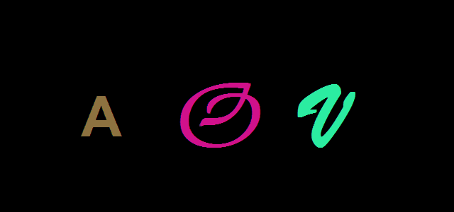

FontAnim is part of a collection of JQuery plugins that animate text in various ways.
I created these plugins to:
- brush up on my JavaScript and CSS skills
- improve my JQuery
- learn new HTML5 and CSS3 technologies
- learn more about the Google Font API
- learn more about GitHub
There are 4 different plugins:
- Random letter styles
- Random font families
- Word zoom (TBA)
- Kaleidoscope letters (TBA)
FontAnim randomly displays each letter of the selected element's text using a different font face. It requires an array of font-family names passed to the plugin. The plugin uses Web Font Loader which is able to load fonts from Google Fonts, Typekit, Fonts.com, and Fontdeck, as well as self-hosted web fonts.
These plugins are based on Director animations I made more than 20 years ago. I used these animations to get my first job as a multimedia developer in 1994 :) Here's an animated gif of one of them:
